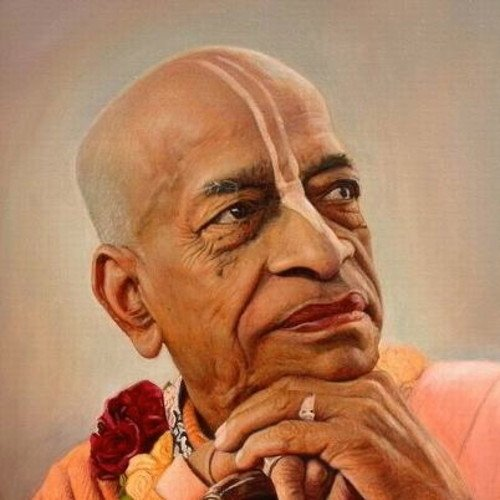

Центр ведичної культури: недільні фестивалі, лекції з філософії, мантра-медитація, курси кулінарії та музики, благодійні обіди «Їжа життя». Приходьте — тут вам завжди раді.
Відвідайте нашу недільну програму ведичної культури — вона безкоштовна та існує завдяки добровільним пожертвам. Це простір духовного спілкування, знань та внутрішнього спокою.
Кожної неділі зустрічаємось у нашому центрі в атмосфері духовності та злагоди
Святкові програми за вайшнавським календарем та дні посту Екадаші — слідкуйте за оголошеннями в Telegram.
Ця зустріч для вас, якщо ви:
Якщо ви вперше — ось три прості дії
Просто прийдіть о 13:30. Нічого не треба знати чи вміти. Посидьте, послухайте, поїжте.
«Бгаґавад-Ґіта як вона є» — почніть з неї. У храмі є безкоштовні брошури для новачків.
Повторюйте «Харе Крішна» кілька хвилин вранці. Відчуйте різницю самі.
Знайомство з Бгаґавад-Ґітою, законами карми та реінкарнації. Глибше занурення — на курсах «Хто Я?», «Основи ведичної філософії», «Бгакті-шастри».
В основі вчення — Бгагавад-гіта: душа вічна, а матеріальне тіло тимчасове. Через віддане служіння (бгакті-йогу) душа відновлює свій зв'язок з Крішною — Верховною Особою Бога.
До курсів →Практика повторення святих імен — серце бгакті-йоги:
Харе Крішна, Харе Крішна,
Крішна Крішна, Харе Харе /
Харе Рама, Харе Рама,
Рама Рама, Харе Харе
Книги, з яких починають. Можна придбати у храмі
Діалог Крішни й Арджуни про обов'язок і сенс життя. Фундамент ведичної філософії.
Історії та філософія бгакті-йоги. Для тих, хто хоче глибше.
Збірка бесід Шріли Прабгупади. Коротко і по суті.
Гаура-пурніма, Чернівці — свято, кіртан і прасад
Більше фото — в нашому Instagram
📍 вул. Скальда (Комарова), 40А, Чернівці
20 відгуків у Google · 16 оцінок «5»
«Прекрасне місце для тих, хто в пошуку духовної істини. Надзвичайно світлі, привітні і доброзичливі люди, в наші дні таких мало де зараз можна зустріти. Рекомендую кожному!»
Ірина Михайлюк
«Прекрасне місце, де панує атмосфера доброзичливості і радості! Всі віддані Крішни привітні, світлі і позитивні. Всіх гостей частують смачним прасадом.»
Мирослав Руснак
«Дуже смачна їжа, потужна філософія, гарна компанія, краще місце де мені доводилось бути.»
Єгор Поплавський
«Great atmosphere of pure bhakti) Kirtan very loud, mridang, caratals. A lot of tasty vegetarian food (prasadam).»
Oleksii Blekot
«Супер место для духовного общения! Очень приветливые и гостеприимные! Нет лучше места в Черновцах»
Роман Гунчак
Так! Недільна програма відкрита для всіх, вхід вільний. Просто приходьте — будемо раді бачити вас.
Стриманий одяг: закриті плечі та коліна. Дякуємо за розуміння!
Ні, запис не потрібен. Приходьте на недільну програму або зв'яжіться з нами через контакти.
Так, діти вітаються! Для них є недільна школа.
Українською.
Вхід вільний. Храм існує на добровільні пожертви.

А.Ч. Бгактіведанта Свамі Прабгупада (1896–1977)
У 1966 році, у віці 70 років, він прибув до Нью-Йорка і заснував Міжнародне товариство свідомості Крішни. За 11 років він об'їхав світ 14 разів, переклав і прокоментував десятки томів ведичних писань.